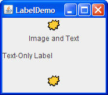

Lección: Usando Componentes Swing
Sección: Cómo Usar Varios Componentes
Cómo Usar Etiquetas
Con la clase JLabel
, puede visualizar texto e imágenes no seleccionables. Si necesita crear un componente que visualize una cadena,
una imagen, o ambas, puede hacerlo usando o extendiendo JLabel. Si el componente es interactivo y
tiene cierto estado, use un botón en vez de una etiqueta.
Al especificar un código HTML en el texto de una etiqueta, puede dar a la etiqueta varias características como
líneas múltiples, fuentes múltiples o colores múltiples. Si la etiqueta usa sólo un único color o fuente, puede
evitar la sobrecarga del procesado HTML usando el método setForeground o setFont en
su lugar. Vea Cómo Usar HTML en Componentes Swing para los detalles.
Note que las etiquetas no son opacas por defecto. Si necesita pintar el fondo de una etiqueta, se recomienda que vuelva su propiedad de opacidad a "true". El trozo de código siguiente le muestra cómo hacer esto.
label.setOpaque(true);
La siguiente foto presenta una aplicación que muestra tres etiquetas. La ventana está dividida en tres filas de igual anchura; la etiqueta en cada fila es tan ancha como es posible.

Intente esto:
-
Pulse el botón Lanza para ejecutar la Demo Label usando
Java™ Web Start (
descargue KDJ 7 o posterior). Alternativamente, para compilar y ejecutar el ejemplo por
usted mismo, consulte el
the índice de ejemplos.

-
Redimensione la ventana de forma que pueda ver como el contenido de las etiquetas es colocado dentro
del área de dibujo de las etiquetas.
Todos los contenidos de la etiqueta tiene una alineación vertical por defecto ─ estos es, los contenidos de la etiqueta son centrados verticalmente en el área de dibujo de la etiqueta. La etiqueta superior, la cual contiene tanto una imagen como texto, tiene alineación horizontal central. La segunda etiqueta, la cual contiene sólo texto, tiene la alineación (principal) a la izquierda, que es la predeterminada para las etiquetas de sólo texto en lenguajes de izquierda-a-derecha. La tercera etiqueta, la cual sólo contiene una imagen, tiene alineación central horizontal, la cual es por defecto para las etiquetas que contienen sólo imágenes.
Abajo está el código de
LabelDemo.java que crea las etiquetas en el ejemplo previo.
ImageIcon icon = createImageIcon("images/middle.gif");
. . .
label1 = new JLabel("Image and Text",
icon,
JLabel.CENTER);
//Establece la posición del texto, relativo a el icono:
label1.setVerticalTextPosition(JLabel.BOTTOM);
label1.setHorizontalTextPosition(JLabel.CENTER);
label2 = new JLabel("Text-Only Label");
label3 = new JLabel(icon);
El código para el método createImageIcon es similar al que se usó a lo largo de este tutorial.
Puede encontrarlo en
Cómo Usar Iconos.
A menudo, una etiqueta describe otro componente. Cuando esto ocurre, puede mejorar la accesibilidad de su
programa usando el método setLabelFor para identificar el componente que la etiqueta describe.
Por ejemplo:
amountLabel.setLabelFor(amountField);
El código precedente, tomado del ejemplo FormattedTextFieldDemo descrito en
Cómo Usar Campos de Texto Formateado, permite a las tecnologías de
asistencia saber que la etiqueta (amountLabel) ofrece información sobre el campo de texto
formateado (amountField). Para más información sobre las tecnologías de asistencia, vea
Cómo Soportar Tecnologías de Asistencia.
La IPA de Etiqueta
Las siguientes tablas listan los constructores y métodos más comunmente usados de JLabel. Otros
métodos que le gustaría llamar están definidos por las clases Component y JComponent.
Estos incluyen setFont, setForeground, setBorder, setOpaque,
y setBackground. Vea La Clase JComponent para los detalles. La IPA
para usar etiquetas se divide en tres categorías:
- Obtener y Establecer los Contenidos de la Etiqueta
- Ajuste de la Apariencia de la Etiqueta
- Apoyo a la Accesibilidad
Nota:
En la siguiente IPA, no confunda el alineamiento de la etiqueta con el alineamento de X e Y. El alineamiento de X e Y es usado por los gestores de diseño y puede afectar a la forma en que cualquier componente ─ no sólo una etiqueta ─ es dimensionada o posicionada. La alineación de etiqueta, por el otro lado, no tiene efecto en la posición o tamaño de la etiqueta. La alineación de etiqueta simplemente determina dónde, dentro del área de dibujo de la etiqueta, el contenido de la etiqueta es posicionado. Generalmente, el área de pintado de la etiqueta es exactamente del tamaño necesitado para pintar en la etiqueta y así la alineación de la etiqueta es irrelevante. Para más información sobre la alineación X e Y, vea Cómo Usar BoxLayout.
| Método o Constructor | Propósito |
|---|---|
|
JLabel(Icon)
JLabel(Icon, int) JLabel(String) JLabel(String, Icon, int) JLabel(String, int) JLabel() |
Crea una instancia de JLabel, inicializándola a tener el/la texto/alineación/imagen
especificada. El argumento int especifica la alineación horizontal de los contenidos de
la etiqueta en su área de dibujo. La alineación horizontal debe ser una de las siguientes constantes
definidas en la interfaz
SwingConstants (la cual JLabel implementa): LEFT,
CENTER, RIGHT, LEADING, o TRAILING. Por facilidad de
localización, recomendamos encarecidamente usar LEADING y TRAILING, en vez de
LEFT y RIGHT.
|
|
void setText(String)
String getText() |
Establece u obtiene el texto visualizado por la etiqueta. Puede usar etiquetas HTML para dar formato al texto, como se describión en Cómo Usar HTML en Componentes Swing. |
|
void setIcon(Icon)
Icon getIcon() |
Establece u obtiene la imagen visualizada por la etiqueta. |
|
void setDisplayedMnemonic(char)
char getDisplayedMnemonic() |
Establece u obtiene la letra que aparecería como una alternativa de teclado. Esto es útil cuando una
etiqueta describe un componente (tal como un campo de texto) que tiene una alternativa de texto pero no
puede visualizarla. Si la propiedad labelFor está también establecida (usando setLabelFor),
entonces cuando el usuario activa el nemónico, el foco del teclado es transferido al componente
especificado por la propiedad labelFor.
|
|
void setDisplayedMnemonicIndex(int)
int getDisplayedMnemonicIndex() |
Establece u obtiene un consejo de cuál carácter en el texto debería ser decorado para representar el
nemónico. Esto es útil cuando tiene dos instancias del mismo carácter y desea decorar la segunda
instancia. Por ejemplo, setDisplayedMnemonicIndex(5) decora el caráctere que está en la
posición 5 (esto es, el sexto carácter en el texto). No todos los tipos de Apariencia pueden soportar
esta característica.
|
|
void setDisabledIcon(Icon)
Icon getDisabledIcon() |
Establece u obtiene la imagen visualizada por la etiquqeta cuando ésta es deshabilitada. Si no especifica una imagen deshabilitada, entonces la Apariencia crea una manipulando la imagen por defecto. |
| Método | Propósito |
|---|---|
|
void setHorizontalAlignment(int)
void setVerticalAlignment(int) int getHorizontalAlignment() int getVerticalAlignment() |
Establece u obtiene el área de la etiqueta donde sus contenidos serían colocados. La interfaz
SwingConstants define cinco posibles valores para la alineación horizontal:
LEFT, CENTER (por defecto para las etiquetas con sólo imágenes), RIGHT,
LEADING (por defecto para las etiquetasa con sólo texto), TRAILING. Para la
alineación vertical : TOP, CENTER (por defecto), y BOTTOM.
|
|
void setHorizontalTextPosition(int)
void setVerticalTextPosition(int) int getHorizontalTextPosition() int getVerticalTextPosition() |
Establece u obtiene el lugar donde el texto de la etiqueta será colocado, relativo a la imagen de la
etiqueta. La interfaz
SwingConstants define cinco posibles valores para la posición horizontal:
LEADING, LEFT, CENTER, RIGHT, y
TRAILING (por defecto). Para la posición vertical: TOP, CENTER
(por defecto), y BOTTOM.
|
|
void setIconTextGap(int)
int getIconTextGap() |
Establece u obtiene el número de puntos entre el texto de la etiqueta y su imagen. |
| Método | Propósito |
|---|---|
|
void setLabelFor(Component)
Component getLabelFor() |
Establece u obtiene el componente que la etiqueta describe. |
Ejemplos que Usan Etiquetas
La siguiente tabla lista algunos de los muchos ejemplos que usan etiquetas.
| Ejemplo | Dónde se Describió | Notas |
|---|---|---|
LabelDemo |
Esta sección | Muestra cómo especificar el alineamiento vertical y horizontal así como también alinear el texto y la imagen de una etiqueta. |
HtmlDemo |
Cómo Usar HTML en Componentes Swing | Le permite experimentar especificando texto HTML en una etiqueta. |
BoxAlignmentDemo
|
Arreglando Problemas de Alineación | Demuestra posibles problemas de alineación cuando se usa una etiqueta en una disposición de caja vertical. Muestra como resolver el problema. |
DialogDemo |
Cómo Hacer Diálogos | Usa una etiqueta cambiable para mostrar instrucciones y proporcionar retroalimentación. |
SplitPaneDemo
|
Cómo Usar Paneles de División y Cómo Usar Listas | Visualiza una imagen usando una etiqueta dentro de un panel de desplazamiento. |
SliderDemo2 |
Cómo Usar Deslizadores | Usa JLabel para ofrecer etiquetas para un deslizador. |
TableDialogEditDemo
|
Cómo Usar Tablas |
Implementa una subclase de etiqueta, ColorRenderer, para visualizar colores en las celdas
de una tabla.
|
FormattedTextFieldDemo
|
Cómo Usar Campos de Texto Formateado | Tiene cuatro filas, cada una conteniendo una etiqueta y un campo de texto formateado que ella describe. |
TextComponentDemo
|
Características del Componente de Texto |
TextComponentDemo tiene una clase interna (CaretListenerLabel) que extiende
JLabel para ofrecer una etiqueta que escucha eventos, actualizándose a sí misma basada en
esos eventos.
|
ColorChooserDemo
|
Cómo Usar Selectores de Color | Usa una etiqueta opaca para visualizar el color actualmente seleccionado contra un fondo fijo de color. |
Vea el tutorial Usar Controles del IU de JavaFX: Etiqueta para aprender sobre los controles etiquetados en JavaFX.